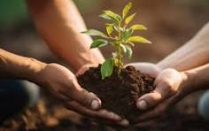

Why Conservation Matters

Environmental conservation is crucial to maintain biodiversity. It is the foundation for a sustainable and thriving planet. Our natural resources—air, water, soil, and biodiversity—are finite, and their protection is essential for the survival of all living beings.
Our Initiatives
We focus on tree planting, reducing plastic waste, promoting renewable energy, and educating communities about sustainable practices. In addition, we organize workshops on composting, sustainable farming techniques, and eco-friendly innovations to engage individuals and communities.
How You Can Help
Volunteer, donate, or participate in our events to make a difference. Together, we can create a sustainable future. You can also adopt eco-friendly habits, such as reducing energy consumption, recycling, and supporting green businesses.
Success Stories
Discover inspiring stories of how communities around the world have worked together to restore ecosystems, clean rivers, and protect wildlife. For instance, our river restoration project in collaboration with local volunteers led to the revival of aquatic life and cleaner water sources for nearby towns.
Future Goals
Our vision includes expanding renewable energy adoption, eliminating single-use plastics, and rewilding degraded lands to support biodiversity. We aim to establish community-based conservation programs and introduce innovative technologies to monitor and protect endangered species.